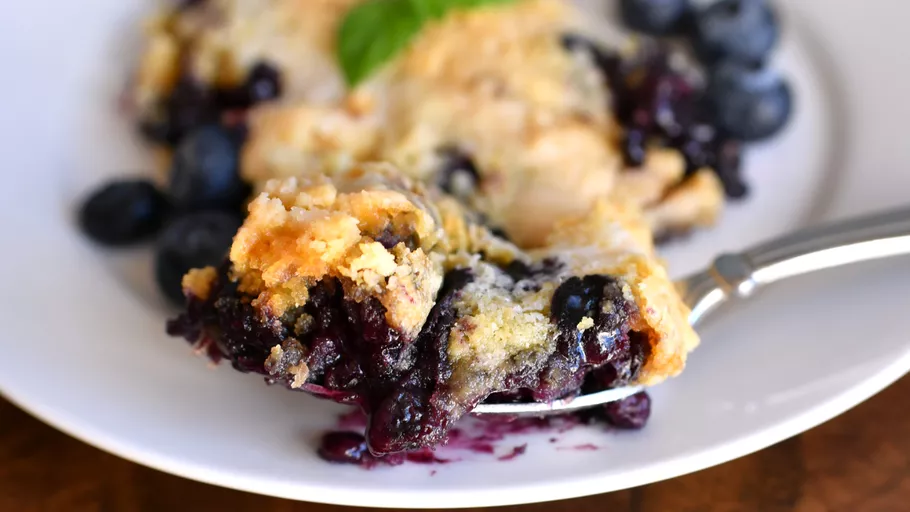

Blueberry

Description
Blueberry dump cake is an easy dessert made by layering juicy blueberries with dry cake mix and butter, then baking until the fruit is bubbling and the top is golden. It has a soft, fruity base and a crisp, buttery topping.
Serve it warm on its own or with a scoop of vanilla ice cream. Its sweet-tart blueberry filling and cake-like crust make it a simple treat to share
Ingredient
- 4 cups fresh blueberries
- ½ cup white sugar
- 1 teaspoon ground cinnamon
- 1 (15.25-ounce) package yellow cake mix
- ½ cup butter, melted
steps
- Preheat the oven to 350 degrees F (175 degrees C)
- Mix blueberries, sugar, and cinnamon in a 9x13-inch pan; spread evenly in the pan. Cover blueberry mixture with dry cake mix. Drizzle melted butter over cake mix; do not stir
- Bake until the top is light golden brown, about 30 minutes
Home